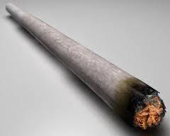
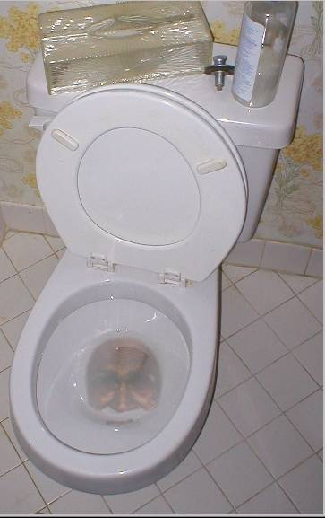
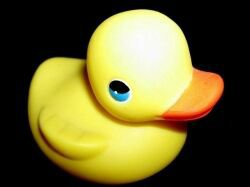
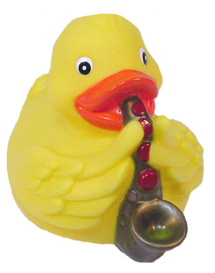
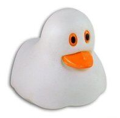

| SCP-420-J, El Mejor Cigarrillo del Mundo |
| 
|
El SCP-420-J es un objeto de broma de clase segura que se puede encontrar en la oficina central, que requiere una Tarjeta de nivel 4 o superior para ingresar.
Se pueden encontrar dos uniones de SCP-420-J en la mesa de habitación junto con un documento y una pantalla legible en la habitación. Utilizat uno de estos objetos provocará que el jugador tenga un ligero desenfoque cuando se mueve y un texto que aparecerá en la parte inferior de la pantalla que diga MAN DATS SUM (HOMBRE, ESTO ES ASOMBROSO), GOOD *CENSURADO* (PERO QUE BUENA *CENSURADO*), presumiblemente dicho por el Jugador.
|
| SCP-789-J, El Fantasma Trasero |
| 
|
El SCP-789-J es un objeto de clase broma seguro. El Jugador puede encontrarse con SCP-789-J ingresando a la sala de WC. Ir cerca de un inodoro hará que suene un archivo de sonido y dirá: "Yo soy el fantasma del trasero, ¡Me comeré tu trasero!"". No sirve para otro propósito que el alivio cómico.
|
| Patos Anómalos |
| Los Patos Anómalos son huevos de Pascua que se pueden encontrar dispersos aquí y allá a lo largo del juego.
|
|  |
Un pato en la oficina de 2 niveles, que se teletransportará cuando el Jugador parpadee, por lo general a 3 o 4 lugares diferentes alrededor de la habitación. |
|  |
Se puede encontrar otro pato al ingresar a la pasarela de gas de tres vías. Se parece al primer pato, excepto por el hecho de que este pato tiene un saxofón. Cuando el Jugador no lo está mirando, el pato jugará una colección aleatoria de notas fuera de compás producidas por un saxofón sí el Jugador todavía está en la misma habitación. Cuando el Jugador mira el pato mientras está tocando el saxofón, dejará de tocar hasta que el Jugador vuelva a mirar hacia otro lado. |
|  |
El último pato se puede encontrar en la granja de servidores, donde gira hacia el Jugador después de parpadear y levantarse del suelo por unos segundos al azar. Este pato es más notable porque es blanco en lugar de amarillo como los otros dos. |